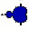

Help for Kfract 0.1.2

Kfract is a generator for fractals. Well, at this early stage it's only capable of mandelbrot
sets and julia sets. Nothing fancy like Xfractint. And it's way far from being as fast as
Xfractint. But it's much easier to use.
The code is a mess and reflects my stage of learning Qt und KDE. But it works. ;-)
1 Mouse functions
1.1 Left mouse button
Left mouse button let you draw a rectangle which will become the next picture. The
center of the rectangle will be the center of the new picture. X/Y ratio will be adapted
to fit into the window.
1.2 Middle mouse button
Middle mouse button zooms in.
1.3 Right mouse button
Right mouse button zooms out by.
2 Menu
2.1 File
2.1.1 Load params
Loads a by KFract generated parameter file and calculates the picture.
2.1.2 Save params
Saves the parameters of the current pictures. This file can be loaded later in order to
re-calculate the picture. It consists of plain ASCII and can be exchanged emong
different machines of even different architectures as long as KDE is installed.
2.1.3 Save pic
Saves current picture as BMP. Sorry, no GIF support so far.
2.1.4 Quit
Well, here you leave Kfract.
2.2 Types
Each entry switches to the displayed fractal type. So far implemented:
2.2.1 Mandelbrot
Switches to mandelbrot set. Parameters (like maximal iteration depth, co-ordinates, width,...) can
be set.
2.2.2 Julia
Switches to julia set. Parameters (like maximal iteration depth, co-ordinates, width,...) can be
set.
2.3 Options
2.3.1 Max. iteration
Maximal iteration depth can be set.
2.3.2 Colour scheme
Here you switch between 2 different colour schemes.
2.3.3 Colour cycling
Not implemented yet.
2.3.4 Zoom factor
The factors for zoom in and zoom out can be set.
2.4 Help
2.4.1 Help
Shows this help page. ;-)
2.4.2 About
Pops up an info box with some information about this program and it's
author.
3 Toolbar
3.1 Open
Like File->Load params.
3.2 Save as parameter file
Like File->Save params.
3.3 Save picture
Like File->Save pic
3.4 Zoom in
Zooms in like middle mouse button (MMB) except that the center of the actual picture becomes
the center of the new picture.
3.5 Zoom out
Zooms out like right mouse button (RMB) except that the center of the actual picture becomes
the center of the new picture.
3.6 Home
Sets all relevant parameters of the actual type to its defaults and re-calculates the set. Parameters
which are not relevant to the actual type (like colour scheme) stay untouched. If you've got lost here
you'll find back.
We are already at the end of the discription. That's really all of it. Please feel free to contact me:
Uwe Thiem
uwe@uwix.alt.na